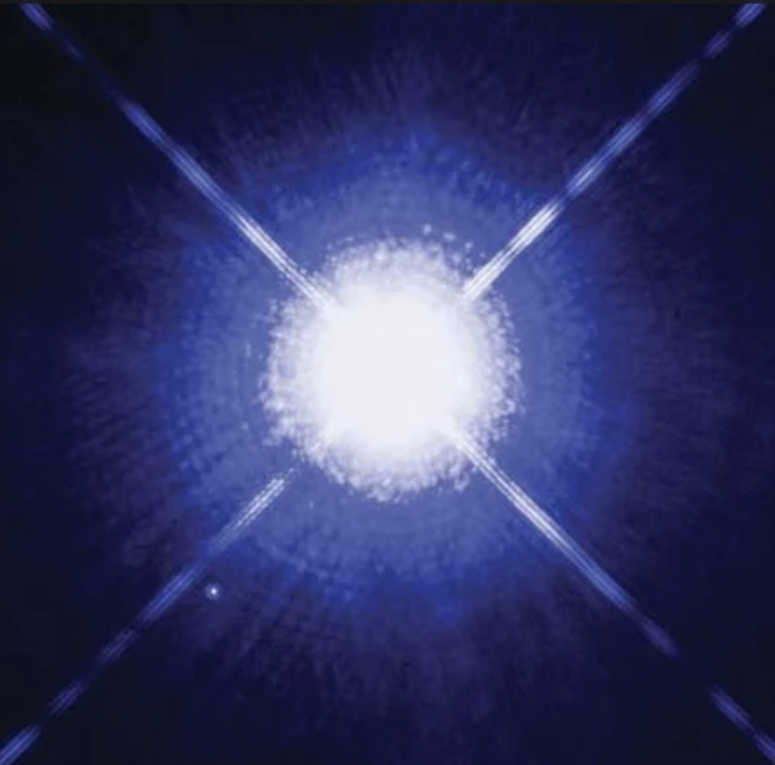
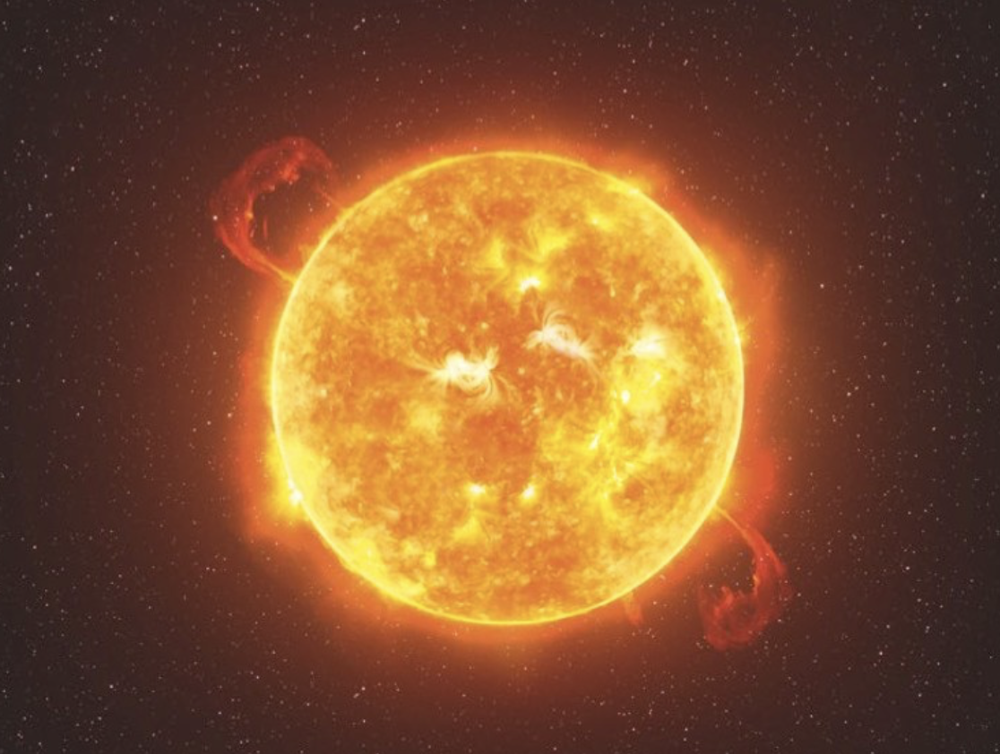
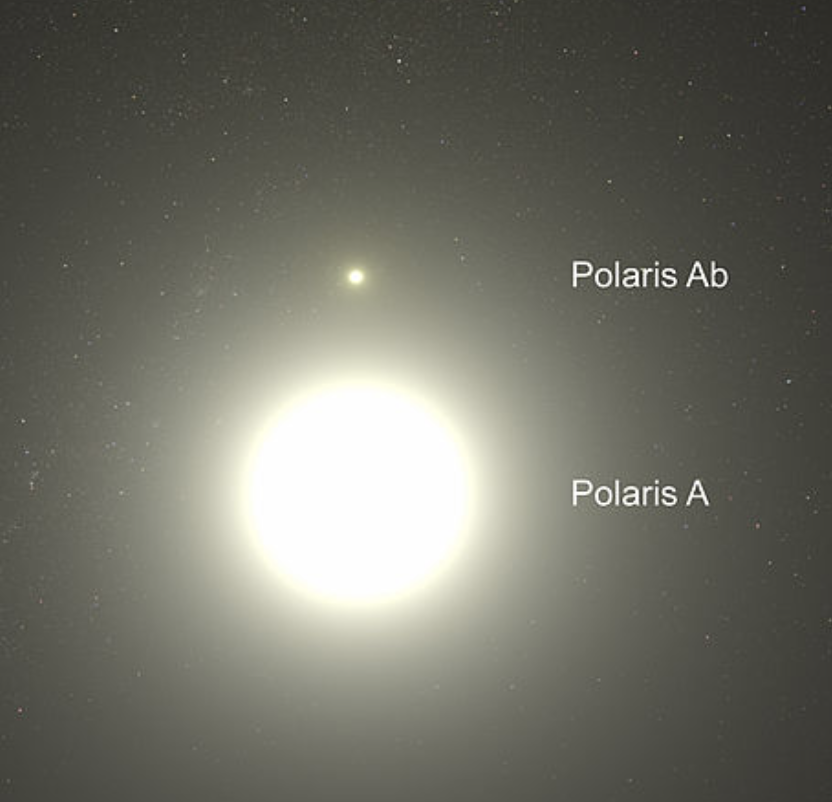
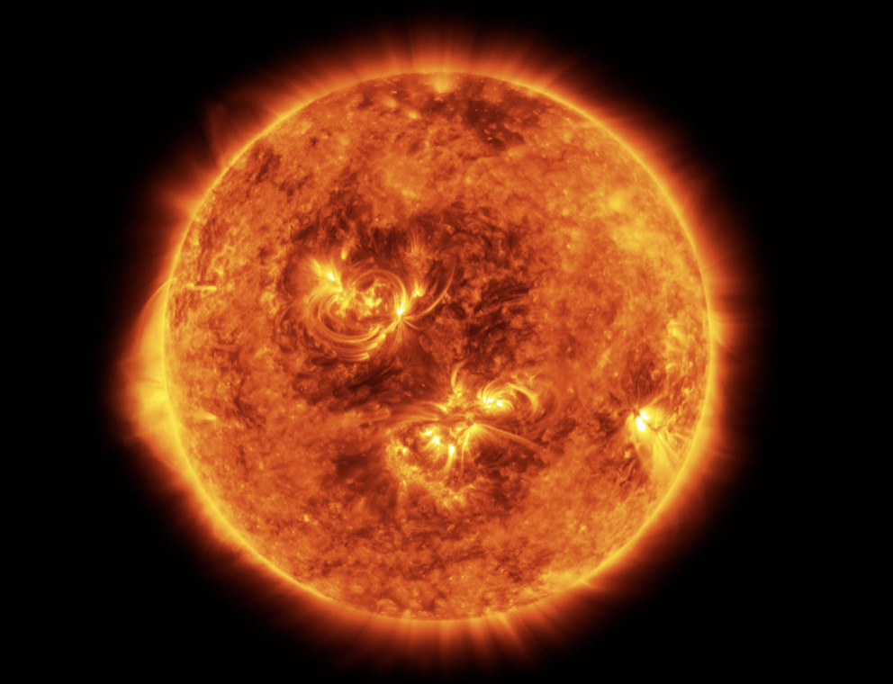

Types of Stars
Stars come in many types based on their size, temperature, color, and brightness. Common examples include main-sequence stars, red giants, white dwarfs, and neutron stars. Stars are massive, luminous spheres of plasma—primarily hydrogen and helium—held together by their own gravity. They generate immense heat and light through nuclear fusion in their cores, with lifespans ranging from millions to trillions of years depending on their mass. Stars are born in nebulae, evolve through various stages (like red giants), and die as white dwarfs, neutron stars, or black holes.
Sirius
Sirius, commonly known as the "Dog Star" or Alpha Canis Majoris, is the brightest star in Earth's night sky, situated in the constellation Canis Major. Located just 8.6 light-years away from our solar system, this blue-white binary system consists of a main-sequence star (Sirius A) and a faint, dense white dwarf companion (Sirius B). It is roughly twice as massive as the Sun and has been historically revered and documented by various ancient cultures for its brilliance
Betelgeuse
Betelgeuse is a prominent red supergiant star located in the constellation Orion, positioned approximately 500–700 light-years from Earth. As a semiregular variable star, its brightness fluctuates significantly, and it is known for being over 700 to 1,400 times wider than the Sun. As one of the largest stars visible to the naked eye, it is near the end of its life cycle and is expected to explode as a supernova, possibly within the next 100,000 years.
Polaris
Polaris, commonly known as the North Star or Pole Star, is a yellow supergiant and triple-star system located about 433 light-years away in the constellation Ursa Minor. Situated almost directly above Earth’s celestial north pole, it appears stationary in the night sky, making it an essential navigational tool for locating true north in the Northern Hemisphere. Although it is the brightest star in its constellation, Polaris is not the brightest in the sky, yet it serves as a critical, nearly fixed beacon for sailors and explorers. Due to Earth's axial precession, Polaris will remain our North Star for roughly 13,000 years before shifting.
The Sun
The Sun is a ~4.6 billion-year-old, G2V-type main-sequence star, representing over 99% of the solar system's total mass, located at the center of our solar system. As a massive, luminous sphere of hot plasma (mostly hydrogen and helium), it generates immense energy via nuclear fusion, sustaining life on Earth through heat and light. It is roughly 93 million miles from Earth, and its strong gravitational pull locks planets, asteroids, and comets into stable orbits
Star Gallery



